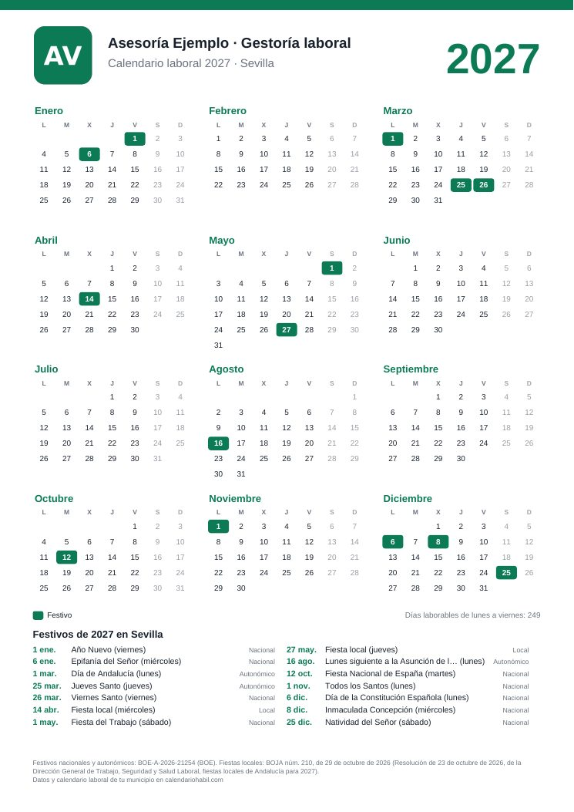
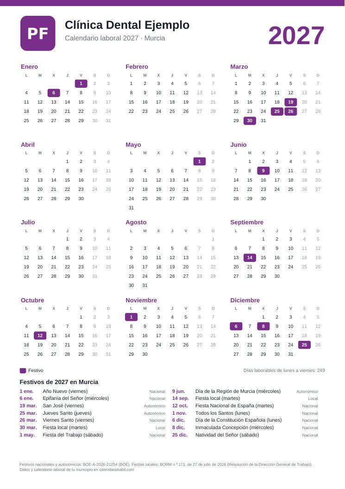

Calendario laboral 2027 con el logo de tu empresa
Un PDF para imprimir con los festivos de 2027 de tu municipio (nacionales, autonómicos y locales), con tu logo, tu nombre y tus colores. Para colgarlo en la oficina o para que una gestoría se lo mande a sus clientes.
Encargar y pagar el PDF Pago seguro en Ko-fi, con tarjeta o PayPal.
Ejemplos
Empresas inventadas, con los festivos reales de 2027:



Qué incluye
- Los 12 meses de 2027 con los festivos de tu municipio marcados en tu color, y la lista de festivos con su día de la semana.
- Tu logo y el nombre de la empresa en la cabecera.
- Si quieres, tus días de cierre o las vacaciones de la plantilla.
- Los días laborables de lunes a viernes del año.
- PDF en A4 y en A3, con la fuente oficial de cada festivo al pie.
Precios del PDF
| Opción | Precio | Qué incluye |
|---|---|---|
| Empresa | 15 € | 1 municipio, tu logo y tu color, con tus días de cierre o vacaciones. PDF en A4 y A3. |
| Gestoría | 39 € | Hasta 10 municipios con el logo de tu gestoría, en A4 y A3, para mandarlo a tus clientes. |
| Gestoría grande | 79 € | Hasta 50 municipios con tu logo, en A4 y A3. |
Impreso y enviado
Si prefieres que te llegue ya impreso: en A3, en cartulina de 250 g, con tu logo, tu color y tus días de cierre. El envío a la Península está incluido; para Baleares, Canarias, Ceuta y Melilla, pregúntanos.
| Cantidad | Precio con envío |
|---|---|
| 25 calendarios | 109 € |
| 50 calendarios | 129 € |
| 100 calendarios | 159 € |
| 200 calendarios | 199 € |
De momento se pide por correo: escríbenos con tus datos y te confirmamos el precio y el plazo de entrega antes de que pagues nada.
Pide tu calendario impreso Por correo, sin pagar nada todavía.
Cómo se encarga
- Elige la opción y paga en Ko-fi.
- Escribe a hola@calendariohabil.com con tu logo (PNG o SVG), el nombre de la empresa como quieras que salga, el municipio o municipios, tu color y, si quieres, los días de cierre.
- Te mandamos el PDF por correo en 1 o 2 días laborables.
Encargar y pagar el PDF Pago seguro en Ko-fi, con tarjeta o PayPal.
¿Tiene la empresa que exponer el calendario laboral?
Sí. La empresa debe elaborar cada año el calendario laboral y exponer un ejemplar en un lugar visible de cada centro de trabajo (artículo 34.6 del Estatuto de los Trabajadores). No exponerlo es una infracción leve (artículo 6.1 de la Ley sobre Infracciones y Sanciones en el Orden Social), que se sanciona según su artículo 40.
Nuestro calendario recoge los festivos y tus días de cierre. Según tu convenio, el calendario laboral de la empresa puede tener que incluir más datos, como el horario o la jornada: revísalo con tu gestoría o con el convenio.
Es un producto personalizado: una vez entregado no admite devolución (artículo 103.c de la Ley General para la Defensa de los Consumidores y Usuarios). Si hay un error en los festivos, te lo corregimos sin coste.
¿Solo quieres consultar los festivos? Están gratis en festivos 2027, con la página de cada municipio.
Preguntas frecuentes
¿Qué festivos lleva?
Los nacionales y autonómicos de 2027 del BOE y las dos fiestas locales de tu municipio según el boletín oficial de tu comunidad. Ya tenemos las de 5.623 municipios.
¿Y si las fiestas locales de mi municipio aún no se han publicado?
Te lo mandamos con los festivos nacionales y autonómicos y un aviso de que faltan las locales. Cuando salgan en el boletín te enviamos la versión completa sin coste.
¿Puedo marcar los días de cierre o las vacaciones de la empresa?
Sí. Dinos las fechas y salen en otro tono de tu color, con el número de días laborables que quedan.
¿En qué formato llega?
En PDF, en tamaño A4 y A3, listo para imprimir o para mandar por correo. Con varios municipios, una página por municipio en el mismo PDF.
¿Cuánto tarda?
Lo recibes en 1 o 2 días laborables desde que tenemos tu logo y tus datos.